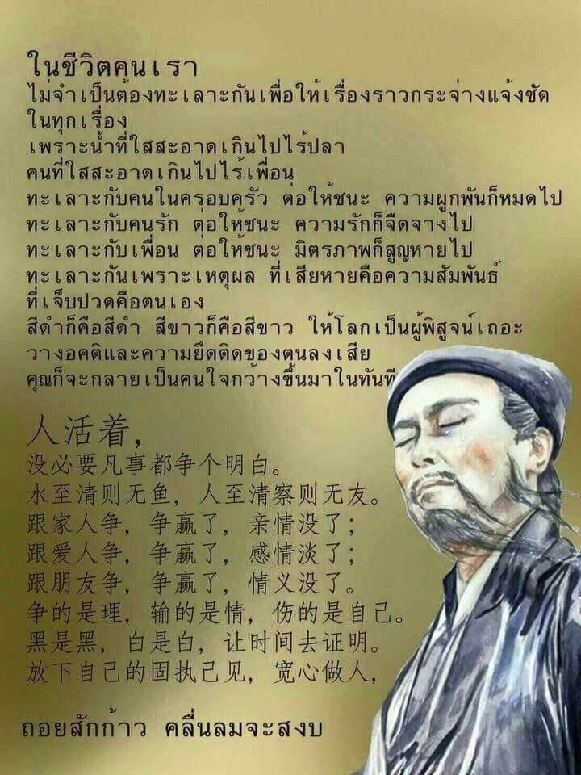

คำขอขมาและอธิษฐานจิต
เพราะคนเราเกิดมาหลายภพหลายชาติ แต่ละคนมีเจ้ากรรมนายเวรที่แตกต่างกัน
ควรสวดขอขมาเพื่อลด และปลดหนี้กรรมให้น้อยลง
(สำหรับอธิษฐานหน้าพระพุทธรูป หรือสวดก่อนนอน)
นะโม ตัสสะ ภะคะวะโต อะระหะโต สัมมาสัมพุทธัสสะ ๓ จบ
สัพพัง อะปะราธัง ขะมะถะ เม ภันเต อุกาสะ ทะวารัตตะเยนะ กะตัง
สัพพัง อะปะราธัง ขะมะถะ เม ภันเต อุกาสะ ขะมามิ ภันเต
หากข้าพเจ้า จงใจหรือประมาทพลาดพลั้ง ล่วงเกินบิดา-มารดา ครูบาอาจารย์
พระพุทธ พระธรรม พระอรหันต์ทุกพระองค์ พระอริยสงฆ์เจ้า
ตลอดจนสิ่งศักดิ์สิทธิ์ทั้งหลาย รวมถึงผู้มีพระคุณ
และท่านเจ้ากรรมนายเวร จะด้วยกาย วาจา ใจ
ขอได้โปรดอโหสิกรรมแก่ข้าพเจ้าด้วย หากข้าพเจ้ามีเจ้าของในตัวติดตามมา
ข้าพเจ้าขออนุญาตมีคู่ มีครอบครัวได้เหมือนคนปกติทั่วไป ขอถอนคำอธิษฐาน
คำสาบานที่จะติดตามคู่ในอดีตขอให้ต่างฝ่ายต่างเป็นอิสระ
ข้าพเจ้าจะประพฤติตนในทางที่ถูก ที่ชอบ ที่ควร
ขอบุญบารมีในอดีตกาลที่ผ่านมาจนถึงปัจจุบัน
จงส่งผลให้ข้าพเจ้าและครอบครัว ตลอดจนบริวารที่เกี่ยวข้อง
จงเจริญด้วยอายุ วรรณะ สุขะ พละ ลาภ ยศ สรรเสริญ สติปัญญา ปฏิภาณ
ธนสารสมบัติ อุปสรรคใด ๆ โรคภัยใด ๆ ขอให้มลายสิ้นไป
ขอให้ข้าพเจ้ามีความสว่างทั้งทางโลกและทางธรรม
ตั้งแต่บัดนี้จนตราบเข้าสู่นิพพานเทอญ
ข้าพเจ้าขอถอนคำสัญญา คำสาบาน คำอธิษฐาน ที่ผูกมัดตัวเองและผู้อื่น
ขอให้ต่างฝ่ายต่างเป็นอิสระจากสัญญาทั้งปวง (หากข้าพเจ้าหมดอายุแล้ว
ข้าพเจ้าขออยู่ต่อเพื่อสร้างบารมี)
หากมีผู้ใดเคยสร้างเวรสร้างกรรมกับข้าพเจ้า ไม่ว่าจะชาติใดภพใดก็ตาม
ข้าพเจ้ายินดีอโหสิกรรมให้ ขอถอนความอาฆาต ความพยาบาท
และคำสาปแช่งในทุกชาติ ทุกภพ
ขอให้ข้าพเจ้าพ้นจากคำสาปแช่งของปวงชนของเจ้ากรรม ขอให้พ้นจากนรกภูมิ
และพบแสงสว่างทั้งทางโลกและทางธรรม
บุญอันยิ่งใหญ่ คือการให้อภัย
วิธีปลดหนี้เงิน คือหาเงินมาใช้
วิธีปลดหนี้บาป คือ ให้ทาน อภัยคน เลิกคิดเบียดเบียนต่อ
วิธีปลดหนี้อวิชชา คือ เจริญสติ
หนี้บาป
ตอนใครทำให้คุณเจ็บช้ำน้ำใจมากๆนั้น
คือรูปแบบหนึ่งของการโดนทวงหนี้
ที่เราโดนไม่ใช่เพราะความบังเอิญ
เป็นเรื่องของการที่เราจะต้องเสวยกรรม
ศาสนาพุทธ เป็นศาสนาของเหตุและผล
ต้องมีการกระทำอะไรบางอย่างที่ผ่านมาเป็นตัวจุดชนวน
ถึงแม้ไม่สามารถโยงได้ถูกว่า
ไปทำกรรมทำเวรอะไรมาถึงได้โดนแบบนี้
ถึงแม้ลืมไปแล้ว ระลึกชาติไม่ได้
เราก็ต้องโดนเอาคืน
อาจฟังดูแล้วไม่ยุติธรรมเอาเลย
แต่นี่แหละ คือความยุติธรรมทางธรรมชาติ
นี่คือกติกาข้อหนึ่งของเกมกรรม
คุณไม่เคยเห็นใบเสร็จชัดๆ
แต่จะโดนทวงอย่างทารุณ
เมื่อครบกำหนดชำระ
เมื่อถูกทำให้แค้น แล้วไม่คิดแก้แค้น
เรียกว่าเป็นการ ใช้หนี้
การอภัย
ไม่ใช่การทนเป็นฝ่ายถูกกระทำไปเรื่อยๆ
การเอาตัวออกห่างไม่ตามจองล้างกัน
นับเป็นรูปแบบการอภัยที่ดีอย่างหนึ่ง
และบางคนก็ ‘อภัยด้วยใจ’
แม้ทางกายยังต้องโต้ตอบตามกฎหมายด้วยซ้ำ
เจ็บช้ำน้ำใจเหมือนกัน
วิธีจัดการแตกต่างกัน
ไม่ใช่ด้วยกรรมเก่าจัดให้
แต่ด้วย ‘กรรมใหม่’ ที่เอาแต่คิดว่า
มีแค่ตนเองเป็นฝ่ายถูกกระทำ
แกเตะมา ข้าต้องเตะกลับให้ได้ - หรือ -
ด้วยกรรมใหม่ที่เริ่มศึกษาธรรม
ว่าสัตว์โลกย่อมเป็นไปตามกรรม
เคยทำไว้อย่างไรก็ต้องรับผลอย่างนั้น
บุญบาปทำหน้าที่อยู่แล้ว
เราปล่อยเขาไปตามทาง
ที่เขาสร้างเอง เดินเอง และเสวยผลเองดีที่สุด
ถ้าผูกใจเจ็บก็เท่ากับพลอยกระโจน
ไปร่วมรับบาปอย่างใดอย่างหนึ่ง
บนเส้นทางของเขาด้วย - หรือ -
ด้วยกรรมใหม่ที่เริ่มฝึกเจริญสติ
เห็นอะไรเกิดขึ้น ก็รู้ว่าจะต้องดับไปเป็นธรรมดา
ไม่ต่างจากลมหายใจที่เข้ามาแล้วต้องออกไปเสมอ
ปลดหนี้อวิชชาด้วยการเจริญสติ
การอยู่กับคนบางคน
คือการชุดใช้กรรมเก่า
และเป็นโอกาสทองสร้างกรรมใหม่
ด้วยการใช้เป็นแบบฝึกในการอภัย
และเจริญสติ รู้ทุกข์ รู้อึดอัด
เมื่อได้สติ รู้สึกถึงลมหายใจ
รู้สึกว่าที่ลมหายใจเข้าออกนี้
มีความกระวนกระวาย มืดดำ ช้ำหนักเพียงใด
เห็นความทุกข์ที่สูญเปล่า
แสดงความไม่เที่ยงอยู่ในแต่ละลมหายใจ
มาแล้วก็ไป ไปแล้วก็กลับมาอีก
หลายร้อยหลายพันครั้งเข้า
ในที่สุดจะกลายเป็นสติ ตื่นรู้
และขี้เกียจยึดภาพน่าแค้น
แทนที่ด้วยสุขอันเกิดจากการวาง
ทุกข์ไปก็เท่านั้น
เดี๋ยวตัวต้นเหตุก็ผ่านไป
ไม่ต่างจากชาติก่อนๆที่คุณลืมไปหมดแล้ว
บางครั้งวางน้อย
บางครั้งวางมาก
บางครั้งวางหมด!
ดังตฤณ@instragram
Self-Confidence Formula
Napoleon Hill
First
I know that I have the ability to achieve the object of my definite
purpose in life, therefore, I demand of myself persistent,
continuous action toward its attainment, and I here and now promise
to render such action.
Second
The dominating thoughts of my mind will eventually reproduce
themselves in outward physical action and gradually transform
themselves into physical reality. Therefore, I will concentrate my
thoughts for 30 minutes daily upon the task of thinking of the
person that I intend to become. Thereby creating in my mind a clear
mental picture.
Third
I know through the theory of autosuggestion, any desire that I
persistently hold in my mind will eventually seek some expression
through some practical means of obtaining the object or position I
desire. I will devote ten minutes daily to demanding of myself the
development of SELF-CONFIDENCE.
Fourth
I have clearly written down a description of my definite chief aim
and I will never stop trying until I develop sufficient
self-confidence for it's attainment.
Fifth
I fully realize that no wealth or position can long endure unless
built upon truth and justice. I will engage in no transaction that
will not benefit all whom it effects. I will succeed by attracting
to myself the forces that I wish to use and the cooperation of other
people. I will induce others to serve me because of my willingness
to serve them. I will eliminate hatred, envy, jealousy, selfishness
and cynicism by developing love for all humanity for I know that a
negative attitude toward others will never bring me success. I will
cause others to believe in me because I will believe in them and in
myself.
I will sign my name to this formula commit to memory and repeat it
aloud once a day in full faith that it will gradually influence my
thoughts and actions so I will become a self reliant and successful
person.
ถอยสักก้าว คลื่นลมจะสงบ
ในชีวิตคนเรา
ไม่จำเป็นต้องทะเลาะกันเพื่อให้เรื่องราวกระจ่างแจ้งชัดในทุกเรื่อง
เพราะน้ำที่ใสสะอาดเกินไปไร้ปลา คนที่ใสสะอาดเกินไปไร้เพื่อน
ทะเลาะกับคนในครอบครัว ต่อให้ชนะ ความผูกพันก็หมดไป
ทะเลาะกับคนรัก ต่อให้ชนะ ความรักก็จืดจางไป
ทะเลาะกับเพื่อน ต่อให้ชนะ มิตรภาพก็สูญหายไป
ทะเลาะกันเพราะเหตุผล ที่เสียหายคือความสัมพันธ์
ที่เจ็บปวดคือตนเอง
สีดำ ก็คือ สีดำ สีขาว ก็คือ สีขาว ให้โลกเป็นผู้พิสูจน์เถอะ
วางอคติและความยึดติดของตนลงเสีย
คุณก็จะกลายเป็นคนใจกว้างขึ้นมาในทันที
